Cayeux 2007

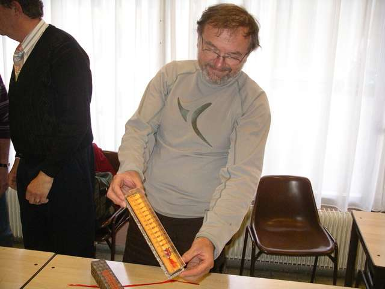
Cayeux, c'était samedi et dimanche, mais samedi, j'avais un Conseil d'Administration ! D'accord, celui du CVCF. J'y vais donc et je partirai après pour Cayeux. Au CA, avant les discussions sérieuses, on célèbre les 10 ans de présidence de Daniel Durieux, qui cède d'ailleurs la place à François Périault...

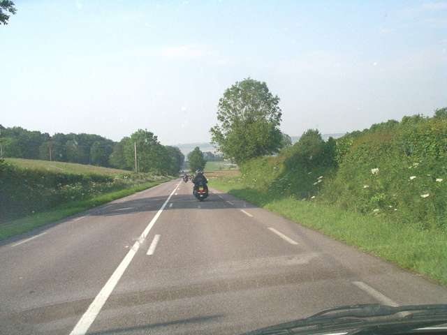
Bon, le CA tirait en longueur, je suis parti avant la fin, excuses ! Heureusement, en chemin, des motards en grosses poum-poum m'ouvrent la route...

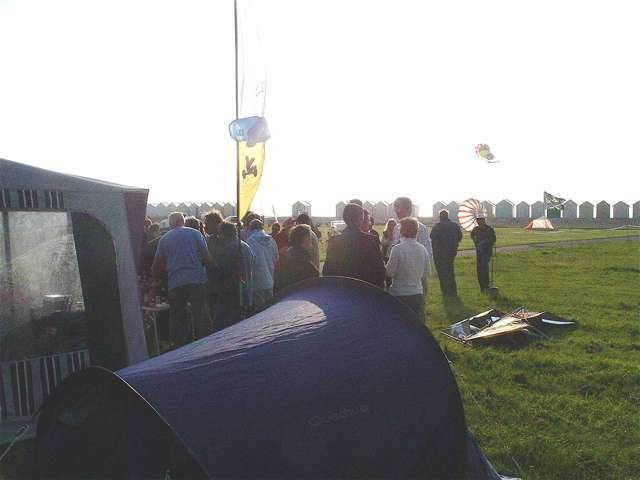
Bon, ça va bien, j'arrive juste pour l'apéro du soir, on dirait !

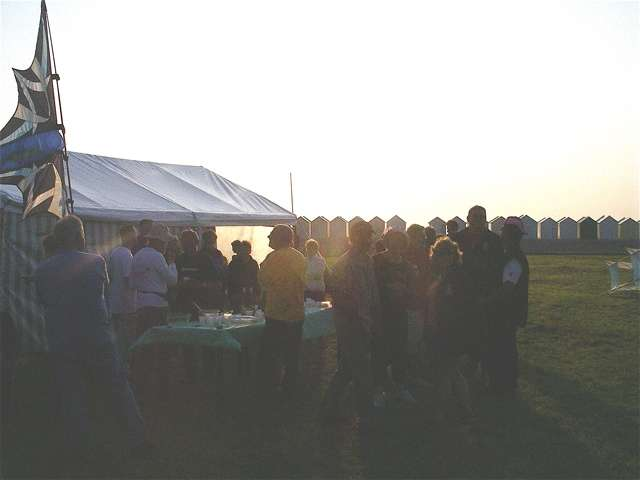
L'apéro a l'air fini, on va vers le barnum du dîner... Ah, mais non, il y a un pot indien, mangue, jus de fruit et alcool indéterminé. Bon, on ne boira pas trop à table pour compenser !

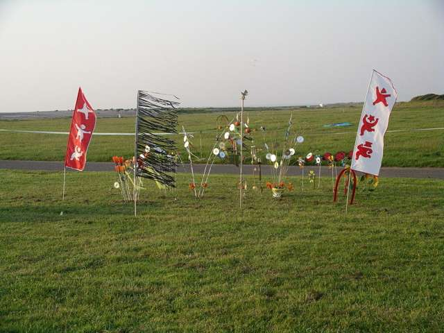
Il n'y a plus rien en l'air, seuls les JdVs témoignent du festival...

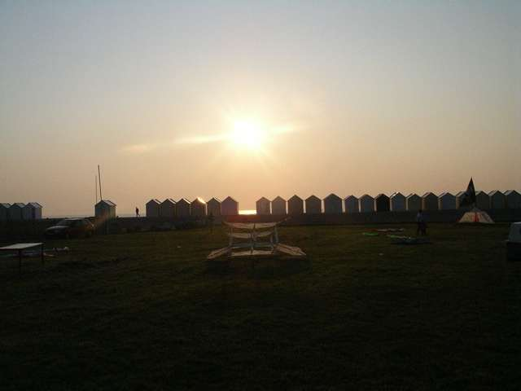
Mais le soleil baisse sérieusement, il est temps de se restaurer après tous ces préliminaires...

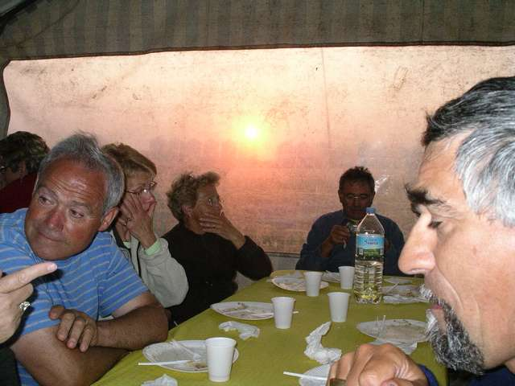
On passe à table, bon buffet garni agrémenté de diverses choses du barbecue alimenté par Jéremy, Sébastien... toute la bande à Bruno, merci à eux...

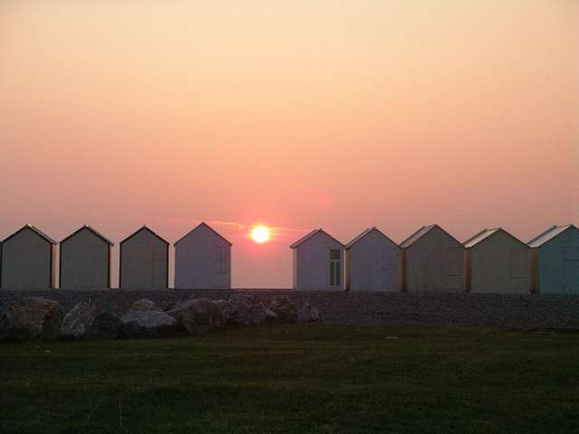
Finalement, le soleil est en courte finale, juste où j'avais prévu, dans le trou entre les cabines !

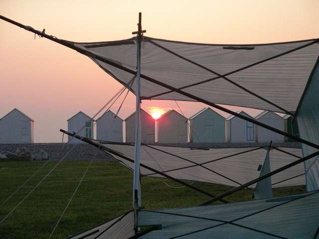
Il descend encore, traverse un Cody resté en alerte au sol...

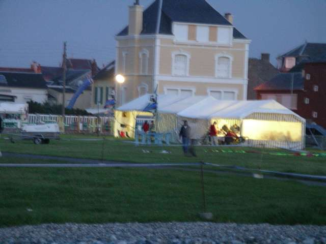
Maintenant il fait bien nuit, heureusement la tente est bien éclairée... Je pars monter mon Megoel, je n'ai pas volé de la journée, moi !

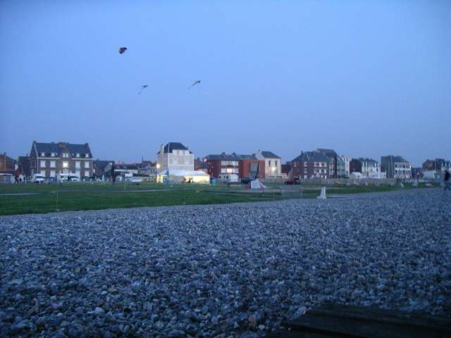
Et plusieurs fanas m'accompagnent, la nuit est belle et le vent pas trop frais...

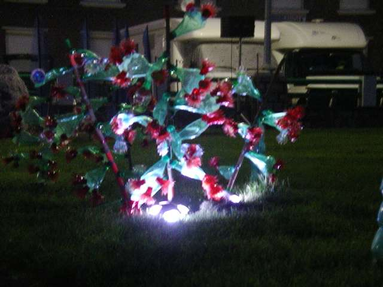
Fernando a balisé la surface et illuminé son JdV, ses cactus, à l'entrée du terrain...

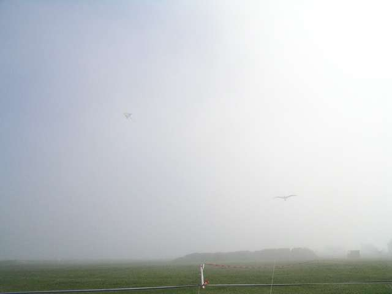
Dimanche matin, je me dis que je vais voler tôt avec mon Spiralier pour compenser mon absence de la veille... Mais le vent est évanescent, et la brume bien présente !

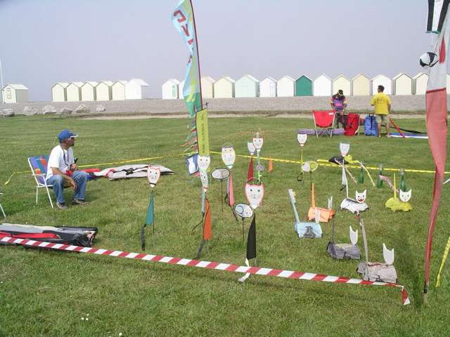
La brume ne monte pas haut, et le soleil brille au travers (par moments) ! Emmanuel a monté son camp de chats...

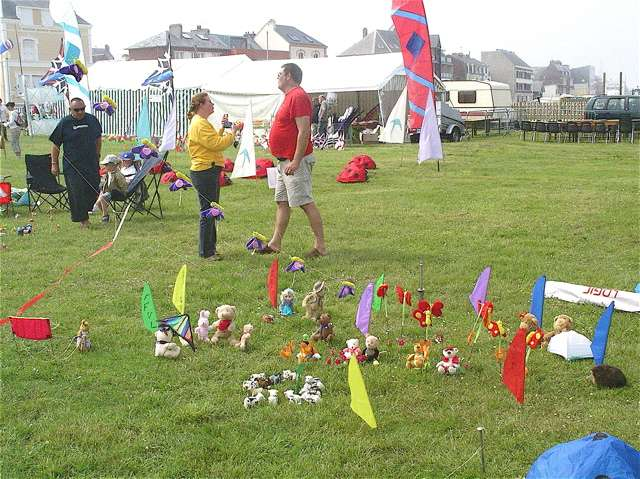
Et Thierry augmente toujours son jardin, qu'il décrit en détail aux passants : A gauche un char à cerf-volant. Ensuite la FFVL, avec son pilotable et Hubert assis devant, puis Fernando, François et Bernadette, et encore Emmanuel et Geneviève en chats, les VentCourtois, etc.

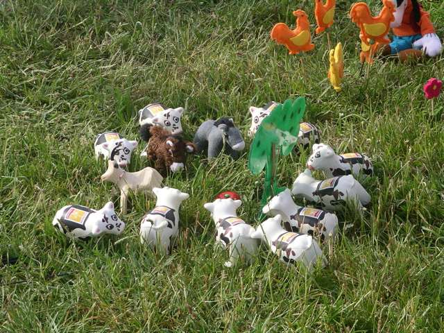
Thierry a gardé son troupeau de vaches, pour servir d'objectif à l'aérophotographe qu'il a simulé aussi...

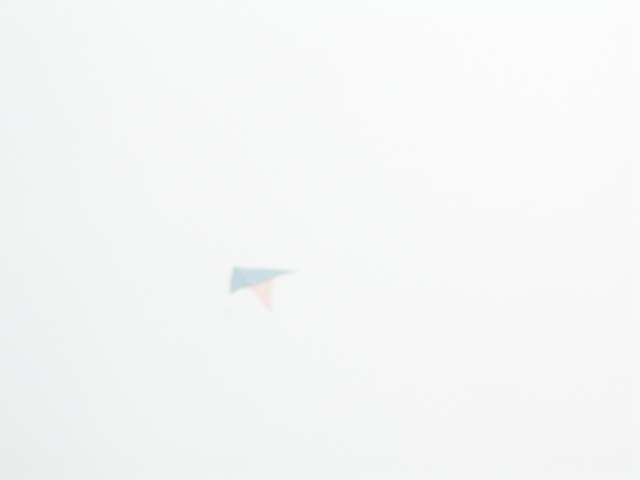
Côté cerf-volant, ce n'est pas l'enthousiasme, à part quelques modèles légers...

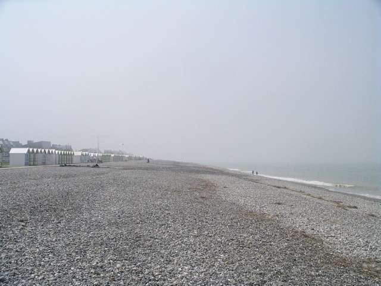
Je profite d'un moment un peu plus clair pour aller voir la plage... Vous savez d'où vient le nom de Cayeux ?

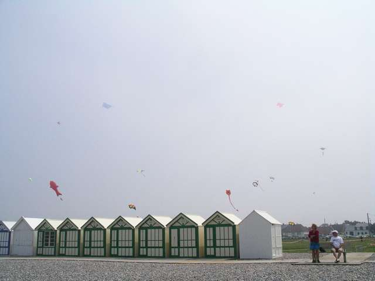
Au-dessus des jolies cabines qui portent des noms poétiques, les cerfs-volants commencent quand même à monter.

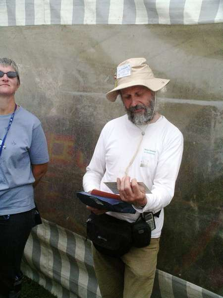
C'est l'anniversaire de Bruno, tout le monde lui a signé une carte postale...

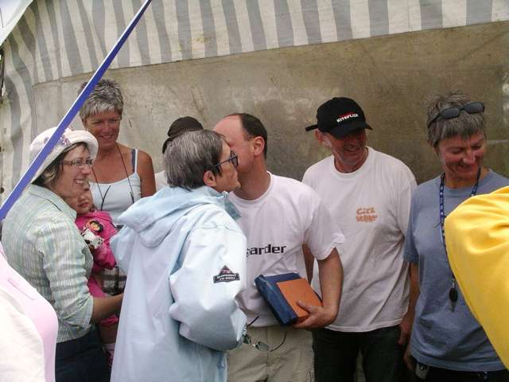
Pareil pour Sébastien, il y a 2 jours !

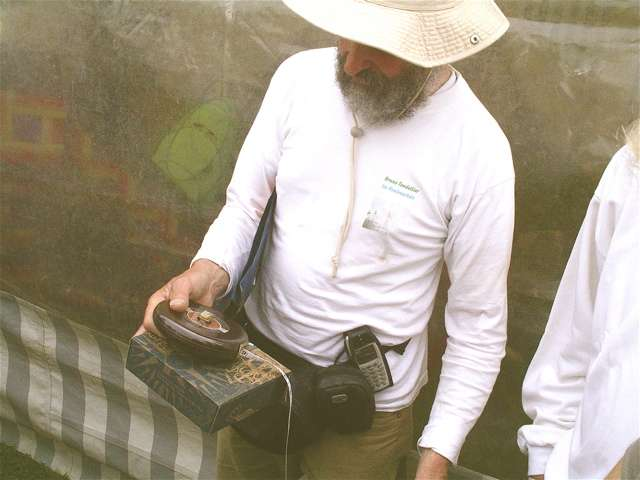
Mais il n'y a pas que la carte, on s'est cotisé pour leur offrir un objet décoratif mais utile...

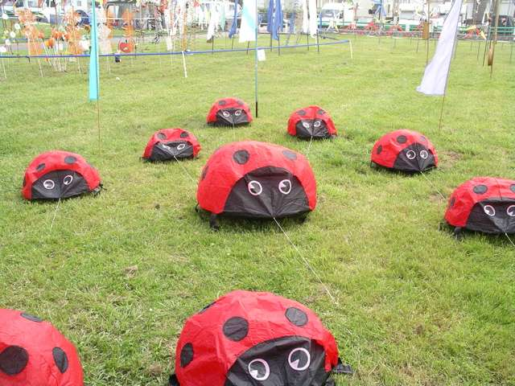
Une belle troupe de coccinelles se moque de la brume. Au milieu trône une grosse coccinelle-mère...

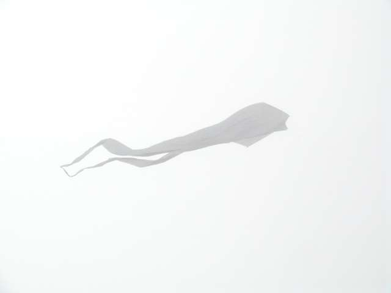
Blanc sur blanc, un pyrodelta arrive à tenir en l'air, il y en aura d'autres...

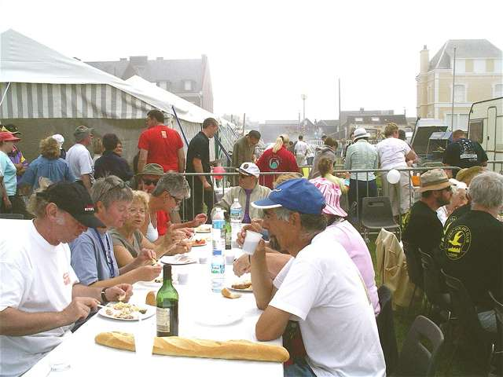
Mais on se retrouve pour déjeuner, ça remonte le moral...

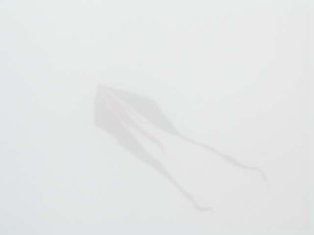
Des pyros, il y en a eu, jamais bien haut, évidemment, sinon, on ne voyait que la ficelle...

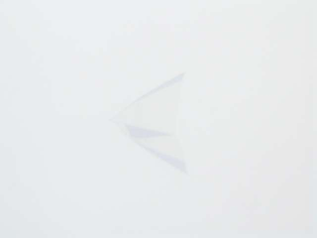
Comme vous pouvez le voir, celui-ci est jaune et violet !

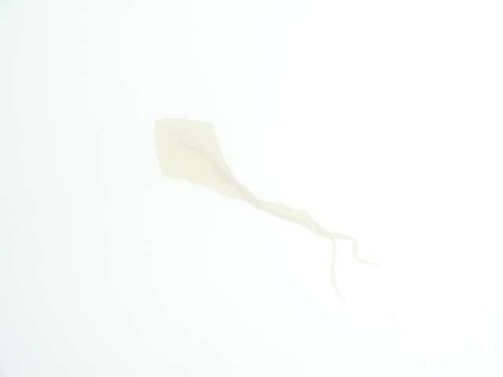
Mais là, c'est bien net, il est jaune...

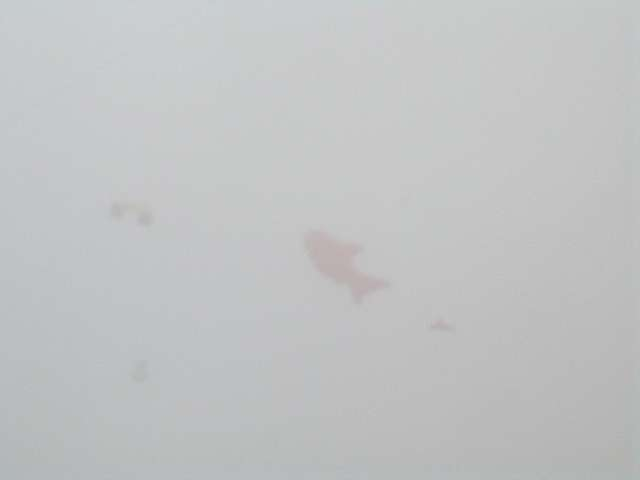
Et voici un magnifique poisson rouge...

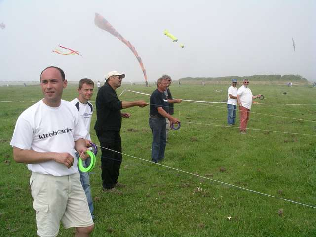
Mais le temps s'améliore un peu, il y a du vent en suffisance, et Bruno (au micro) lance le traditionnel combat de Rokkakus... En fond, Sylvain fait voler sa raie, enfin, essaye...

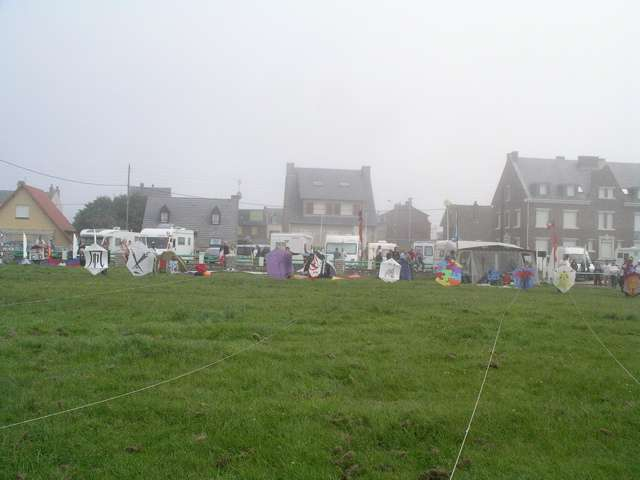
Ca y est, tout le monde est paré au décollage ! Après, bien sûr, je ne peux plus prendre de photos en combattant !

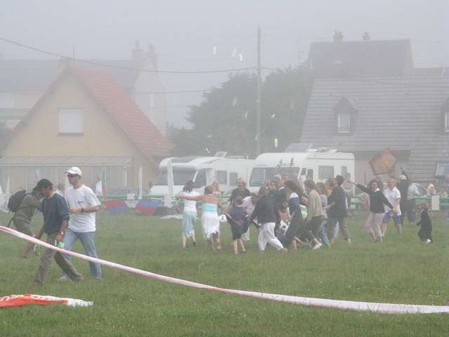
Il y a eu aussi un lâcher de bonbons pour les enfants. Mais comme c'est la Fête des Mères, on en a fait un spécial Mamans...

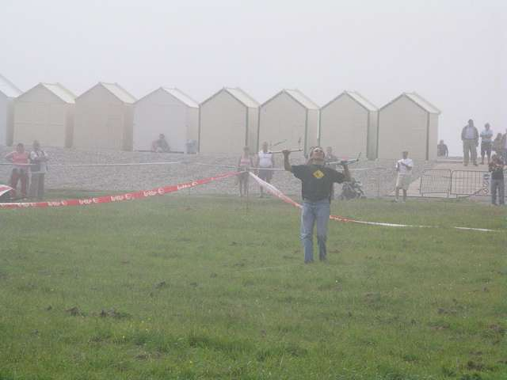
Un artiste a présenté un numéro de multiple, comme Ray Betell : 3 pilotables, un dans chaque main, un à la taille. Il faut le faire, ça représente quelques heures d'entraînement, félicitations...

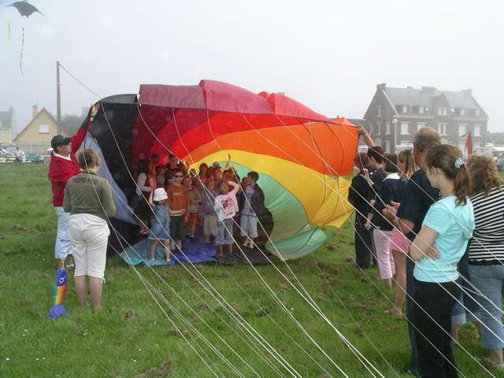
Pour amuser encore les enfants, Fabian les a fait avaler par sa turbine ! Et pour finir, on ferme devant, et ils doivent sortir à l'autre bout !
Ca a été un bon week-end, je regrette de n'avoir pas pu venir plus tôt. La météo n'était pas très coopérative, la brume grise, ça mine l'ambiance, mais on a quand même eu assez de vent pour s'amuser... Et l'accueil chez Bruno est toujours super-sympathique !